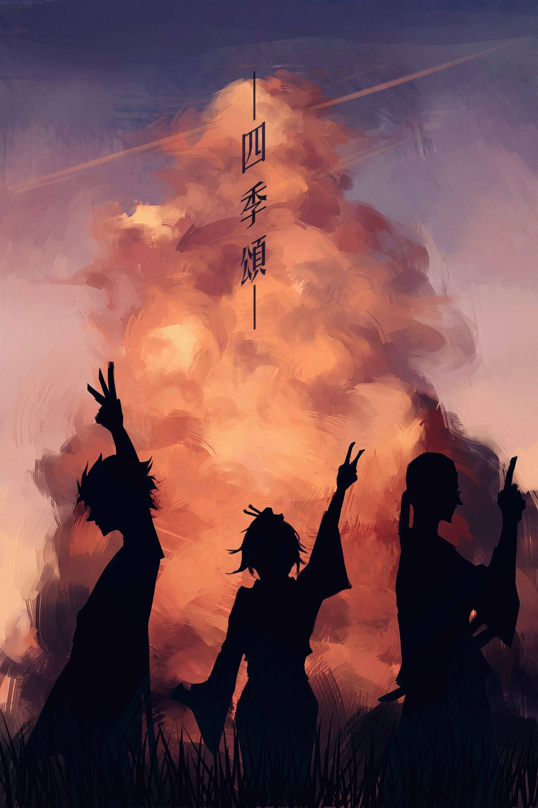

ΛЛłMΞS ΛŁTΞЯЛΛTłVФS
- 
-
-
-
Samurai Champloo
Na era Tokugawa, quando estrangeiros eram proibidos de entrar em solo japonês, uma jovem de 15 anos está a procura de um famoso samurai, mas não tem muitas informações sobre seu paradeiro. Durante sua busca, ela encontra dois rapazes que decidem acompanhá-la até o final, mesmo que não seja isso o que ela queira. Aos poucos, eles constroem uma grande amizade.
Monster
O neurocirurgião Kenzou Tenma era muito bem sucedido em seu trabalho no Hospital Memorial Eisler de Dusseldorf. Certa noite, chega ao hospital dois irmãos gêmeos em estado grave, Johan Liebert e Anna Liebert. Porém, Kenzou não consegue dar atenção total a eles, pois o prefeito da cidade, beirando a morte, precisa ser atendido primeiro. Por essa e outras razões, Kenzou começa a perceber que o seu local de trabalho prioriza mais aqueles que tem dinheiro do que aqueles que precisam, e uma série de eventos é mais do que suficiente para acabar de vez com sua carreira e praticamente destruir sua vida.
Akira
Uma grande explosão fez com que Tóquio fosse destruída em 1988. Em seu lugar foi construída Neo Tóquio, que, em 2019, sofre com atentados terroristas por toda a cidade. Os amigos Kaneda e Tetsuo integram uma gangue de motoqueiros. Eles disputam rachas violentos com uma gangue rival, os Palhaços, até que um dia Tetsuo encontra Takashi, uma estranha criança com poderes que fugiu do hospital onde era mantido como cobaia.
Cowboy Behop
Jet Black, Faye Valentine e outros, a bordo de uma nave interestelar chamada Bebop, têm seus olhos em uma recompensa lucrativa. No entanto, se eles esperam obtê-la, eles devem transportar o homem responsável por liberar veneno em Marte. Embora isso pareça ser um grande desafio que envolve alcançar o infame Vincent Volaju, nos anos de 2070, há mais problemas que a equipe da Bebop imagina.